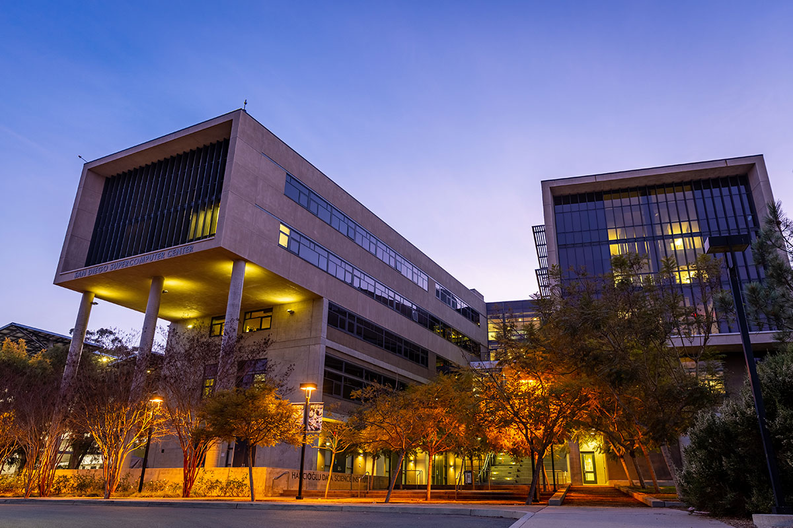

Software Developer Intern, SDSC
A summer developer internship on a mobile cooking social media app, which led to a return offer as a Research Data Services intern.
- React Native / Expo
- Express
- PostgreSQL
- Prisma
- Passport.js
- Cloudflare / Resend

Image slotimages/sdsc-hero.pngAbout What I Do
- Joined SDSC in summer 2026 as a developer on Cook Out, a gamified iOS social cooking app, working with five other developers.
- Held weekly meetings to brainstorm front-end design, plan feature implementation, and track overall progress.
- Started by setting up the project structure and creating high-fidelity mockups of the pages.
- Moved on to building features, including REST API endpoints and Postgres database integration.
- The project ended as a PERN-stack application integrated with React-Native and Expo framework.
What I've Worked On
Rather than a single feature, the internship gave me broad experience across the whole software stack:
- Full-stack development: building features end to end, from the database and API to the mobile interface.
- Authentication and account security: secure sign-in, email verification and password-reset flows.
- API and database design: designing REST endpoints and working with relational data.
- Efficient data loading: techniques like pagination that keep long lists fast.
- Reusable UI components: turning mockups into consistent, maintainable interfaces.
- Team workflow: planning, design discussions and progress tracking with a team of developers.
Future Prospects
I received a return offer and am continuing at SDSC as a Research Data Services intern from Fall 2026 through Spring 2027, working on a variety of project features. Recently, I've been a part on a cloud management project to help with allocation of memory and resources to professors and other clients needing data space for research and the like.
See Cook Out on the App Store